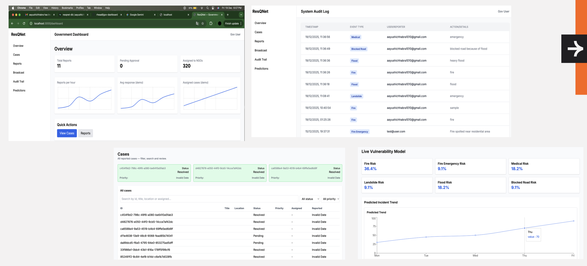
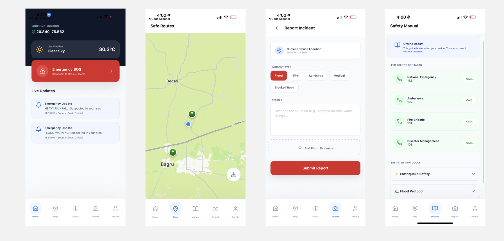
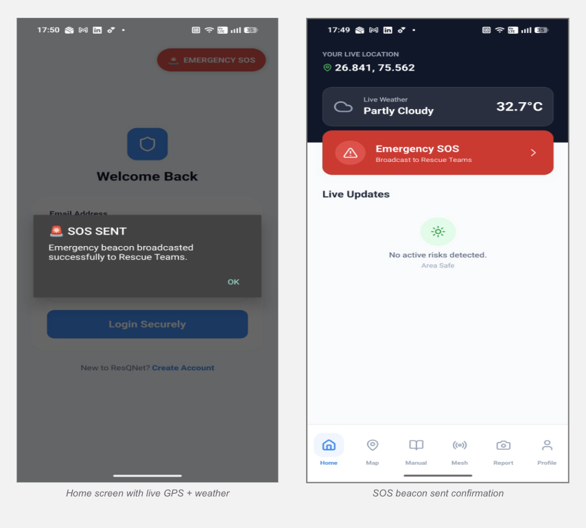
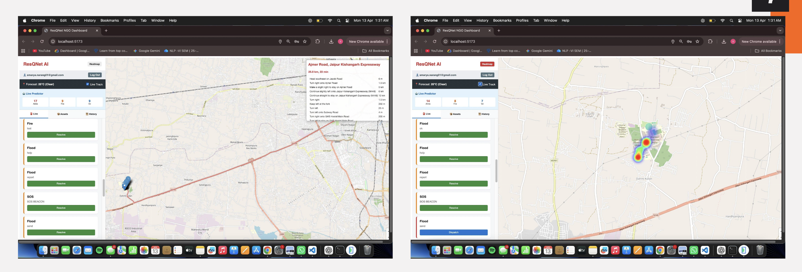
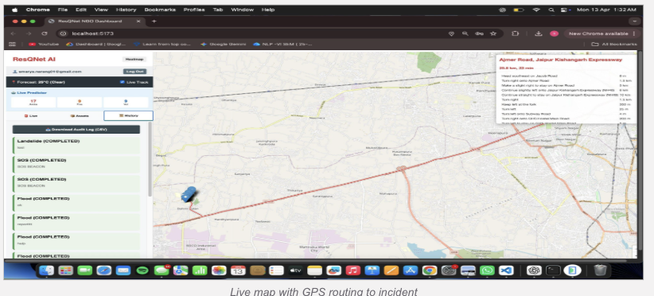
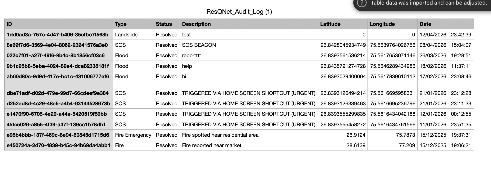
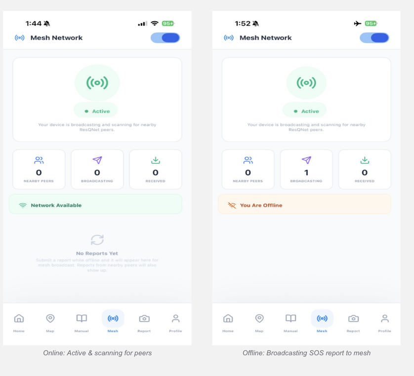
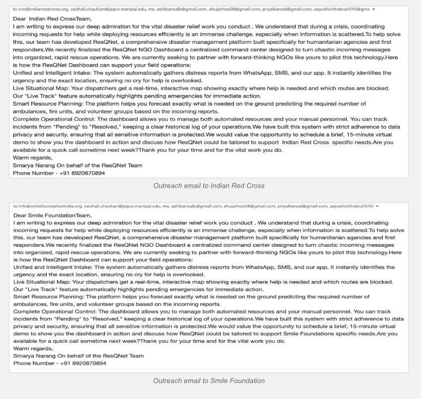

Presented by the Team
Major failures happen due to:
ResQNet ensures rescue coordination even during network blackout.
Existing Disaster Management Systems
1. Internet Dependency | 2. One-Way Communication | 3. Lack of Real-Time Ground Feedback
Most existing disaster platforms mainly support:
Most systems lack:
Need for a platform that enables:
During disasters, internet and cellular failures create an information blackout, preventing citizens from sending SOS signals and stopping NGOs/government from locating victims during the Golden Hour.
Provide real-time clustering + heatmaps for better rescue prioritization.
Predict required resources (ambulances, rescue teams, fire vans) using AI.
Build an offline-first SOS reporting system that works without 4G/5G.
Create a unified platform connecting Citizens, NGOs and Government.

Purpose: Disaster Monitoring & Strategic Control
Features:
Key Idea: Authorities don’t just warn people, they manage the entire rescue strategy.
➡ Better resource utilization
➡ Reduced rescue delays


Purpose: Instant Distress Communication
Features & Live Deployment (Deployed APK):
App Successfully Deployed: ResQNet is now a fully functional Android APK distributed for real-world use.
Key Idea: Victim should never be digitally invisible.
➡ Help request sent even without internet



Purpose: Rescue Team Decision Center
Features (GPS Routing + History & Audit Log):
Key Idea: Not just seeing disaster, knowing who needs help first.
➡ Faster and smarter rescue deployment
● Online: Active & scanning for peers
○ Offline: Broadcasting SOS report to mesh
Devices communicate directly with each other using Bluetooth & WiFi-Direct — no internet required.

Impact: Victims can call for help even in a total network blackout — the mesh carries the signal.
Real-World NGO Partnerships Initiated: We have reached out to leading NGOs and humanitarian organisations to pilot ResQNet.
Organisations Contacted:
What We Proposed:
Next Steps:

NCRB – Accidental Deaths & Suicides in India (ADSI Report 2022)
UN Office for Disaster Risk Reduction (UNDRR)
World Meteorological Organization (WMO) Atlas of Mortality & Economic Losses (1970–2021)
NDMA / NDEM Disaster Response Systems
OpenStreetMap Documentation
PostgreSQL + PostGIS Official Docs